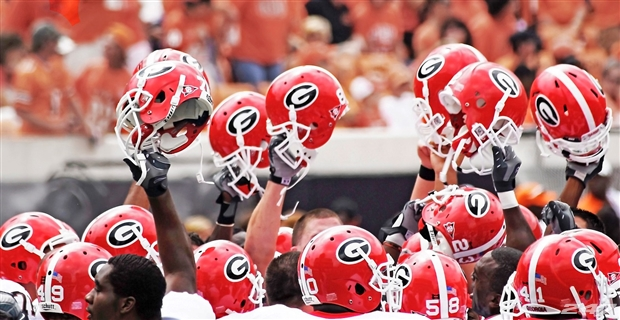
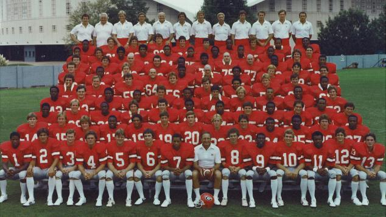

Georgia Football
By: Sam Smith

Georgia Football Hype Videos!
Georgia Football has always been near and dear to my heart. With my father having gone to the University of Georgia, I grew up travelling back and forth from Athens to Nashville, TN, my hometown, to see multiple football games a year. My interest in Georgia Football has grown even more since I have enrolled at UGA. So, for my Web Project, I would love to share some interesting information about the Georgia Football Team!
First, I would love to share some cool facts about the history of Georgia Football. The Georgia Football team's first season was in 1892. Since then, the team has won two National Championships in 1942 and 1980, twelve SEC Championships, and thirty bowl games. The team has also been home to two Heisman Trophy Winners and 335 NFL football players.

1980 National Championship Team
Growing up playing running back for my football team, I have continually been interested in Georgia's stellar running back core. Below are three of my favorite running backs to have gone through UGA while I was alive and some of their statistics:
- Todd Gurley II #3
- Knowshon Moreno #24
- Nick Chubb #27
| Player | Todd Gurley II | Knowshon Moreno | Nick Chubb |
|---|
| Height | 6ft 1in | 5ft 11in | 5ft 10in |
|---|
| Weight | 227 lb | 218 lb | 228 lb |
|---|
| Total Rushing Yards in Career | 3285 yds | 2734 yds | 2294 yds (more to come!) |
|---|
More information on Georgia Football: